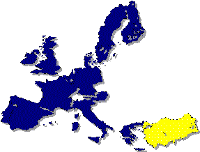

Türkiye-AB Ýliþkilerini Düzenleyen Hukuki Metinler:
- Ankara Anlaþmasý
- Katma Protokol
- 1/95 ve 2/95 Sayýlý Ortaklýk Konseyi Kararlarý

Gümrük Birliði'nin Tamamlanmasý Ýçin Gerekli Unsurlar:
Topluluðun Ticaret, Rekabet ve Tarým Politikalarýna Uyum
Gümrük Birliði Çerçevesinde Tekstil ve Konfeksiyon Sektörü
Avrupa Kömür ve Çelik Topluluðu Ürünleri Kapsamýnda Türkiye-AB Ýliþkileri
DTÖ Bakanlar Konferansý Sonuçlarýnýn AB açýsýndan deðerlendirilmesi